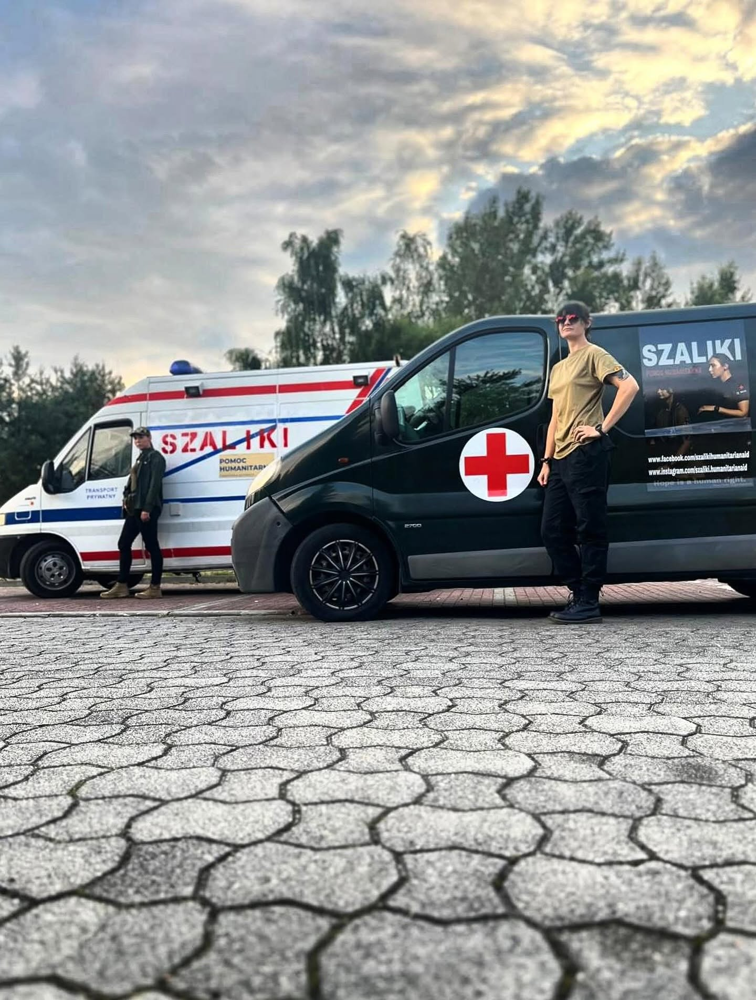

Agree on three things with your loved ones
- where the nearest available shelter is and how to get to it;
- who you contact first and where you meet when the phones are down;
- who helps a child, an elderly person, a sick person or an animal.
It's impossible to predict everything. However, you can prepare a few simple decisions in advance - without panic and without survival equipment.
If you live in Poland, start by learning about local emergency signals, nearest points of refuge and official sources of information. Preparation also helps during power outages, heating or communications.

You don't need to know how to make a fire, build a shelter or have a specialized backpack. Preparing for a crisis may simply mean knowing the nearest shelter, important numbers and a plan to contact loved ones. Do as much as you can.
Save channels of local authorities and services. Turn on alerts, but verify important announcements with official sources. Set a simple message with your loved ones: "I am safe" and do not publish your location or other people's data live.
If you can, have your documents or their copies, necessary medicines, water, phone and charger, some cash and contact details in one place. A regular bag will do. Don't buy specialized equipment if you don't need it.
Check service announcements. If the designated shelter is close, the route to it is safe, and you have time, take the stairs instead of the elevator. If getting there would require you to be outside for a long time, stay in a solid, undamaged building, away from windows. Don't leave the shelter hastily.
Do not approach damaged buildings, debris or unknown objects. Don't touch or move anything suspicious. Move to a safe place and call 112 if you need urgent help.
Fear in such a situation is a normal reaction. Focus on one step ahead, breathe slowly and ask someone you trust to be present. Help others only if you can do it without endangering yourself.
Check in advance where the nearest shelter point is and how to get to it. You can use shelter point maps ↗. Also write down an alternative location and route.
Pack things for household members: water, medicines and a first aid kit, documents or copies, a flashlight, a charged power bank, a charger, some cash, basic hygiene products and a change of clothes. Adapt the content to the needs of children, sick people and animals.
Carry a flashlight, spare batteries and a battery- or crank-powered radio. Write down important numbers on paper. Set a meeting point with your loved ones and a contact person from outside the area. When the network is congested, a short text message may be more effective than a phone call.
Follow the orders of the services and use the designated route. Take a backpack and necessary medicines, tell your loved ones where you are going, and remember about animals. Do not block escape routes or the passage of services.
The impulse to pull people out from under the rubble is understandable. But the impact site can still be dangerous: there are threats of collapse, fire and unexploded ordnance, and further attacks have occurred. Do not enter the rubble or damaged building. From a safe place, call 112 and tell them where you are, what happened and if anyone may be trapped. Help only if you can do it without entering the danger zone and without hindering the work of the services.
It's not a movie - don't play the hero. Wait for the rescuers, follow the dispatcher's instructions and always give way to people authorized to act: rescuers, medics, firefighters and police. Do not block their path or access to the injured.

There is no one perfect set or one plan for everyone. Choose a few specific steps that fit your home and capabilities. Even writing down your phone number and talking to your loved ones is already preparation.
Explanations of terms →Please check this information again for your locality; local recommendations may vary.